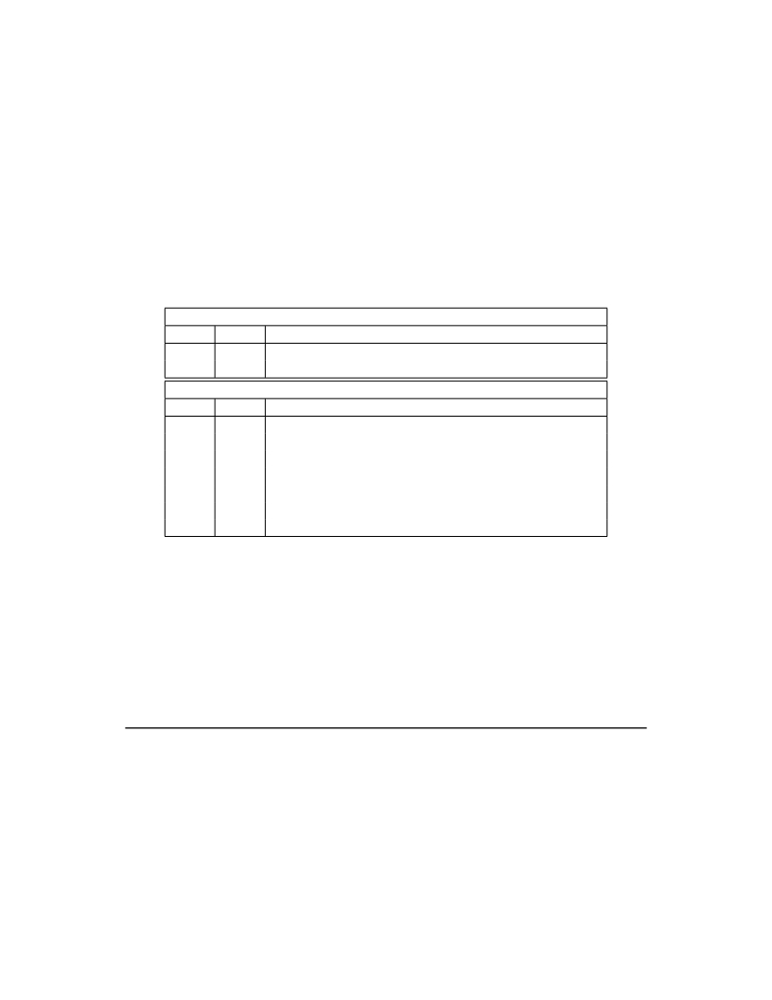

<table border="0" height="1453" width="1123">
<tr><td>
<div style="position:absolute; top:0; left:0;"></div>
<div style="position:absolute;top:74.119;left:132.145;"><nobr>
<span style="font-size:20.022;">64</span>
</nobr></div>
<div style="position:absolute;top:74.119;left:331.141;"><nobr>
<span style="font-size:20.022;font-style:italic;">Volume II: RISC-V Privileged Architectures V20190608-Priv-MSU-Ratified</span>
</nobr></div>
<div style="position:absolute;top:130.572;left:132.145;"><nobr>
<span style="font-size:20.022;">memory protection beyond the physical memory protection scheme described in Section</span>
<span style="font-size:20.022;color: #000080;"><a href="#" onClick="javascript:parent.GotoNewPage(59); return false">3.6</a></span>
<span style="font-size:20.022;">. In</span>
</nobr></div>
<div style="position:absolute;top:155.440;left:132.145;"><nobr>
<span style="font-size:20.022;">this case, the remaining fields in satp have no effect.</span>
</nobr></div>
<div style="position:absolute;top:198.592;left:132.145;"><nobr>
<span style="font-size:20.022;">For RV32, the only other valid setting for MODE is Sv32, a paged virtual-memory scheme described</span>
</nobr></div>
<div style="position:absolute;top:223.460;left:132.145;"><nobr>
<span style="font-size:20.022;">in Section</span>
<span style="font-size:20.022;color: #000080;"><a href="#" onClick="javascript:parent.GotoNewPage(78); return false">4.3</a></span>
<span style="font-size:20.022;">.</span>
</nobr></div>
<div style="position:absolute;top:266.612;left:132.145;"><nobr>
<span style="font-size:20.022;">For RV64, two paged virtual-memory schemes are defined: Sv39 and Sv48, described in Sections</span>
<span style="font-size:20.022;color: #000080;"><a href="#" onClick="javascript:parent.GotoNewPage(82); return false">4.4</a></span>
</nobr></div>
<div style="position:absolute;top:291.480;left:132.145;"><nobr>
<span style="font-size:20.022;">and</span>
<span style="font-size:20.022;color: #000080;"><a href="#" onClick="javascript:parent.GotoNewPage(83); return false">4.5</a></span>
<span style="font-size:20.022;">, respectively. Two additional schemes, Sv57 and Sv64, will be defined in a later version</span>
</nobr></div>
<div style="position:absolute;top:316.347;left:132.145;"><nobr>
<span style="font-size:20.022;">of this specification. The remaining MODE settings are reserved for future use and may define</span>
</nobr></div>
<div style="position:absolute;top:341.214;left:132.145;"><nobr>
<span style="font-size:20.022;">different interpretations of the other fields in satp .</span>
</nobr></div>
<div style="position:absolute;top:384.367;left:132.145;"><nobr>
<span style="font-size:20.022;">Implementations are not required to support all MODE settings, and if satp is written with an</span>
</nobr></div>
<div style="position:absolute;top:409.234;left:132.145;"><nobr>
<span style="font-size:20.022;">unsupported MODE, the entire write has no effect; no fields in satp are modified.</span>
</nobr></div>
<div style="position:absolute;top:451.594;left:537.840;"><nobr>
<span style="font-size:20.022;">RV32</span>
</nobr></div>
<div style="position:absolute;top:477.191;left:251.823;"><nobr>
<span style="font-size:20.022;">Value</span>
</nobr></div>
<div style="position:absolute;top:502.791;left:271.289;"><nobr>
<span style="font-size:20.022;">0</span>
</nobr></div>
<div style="position:absolute;top:527.658;left:271.289;"><nobr>
<span style="font-size:20.022;">1</span>
</nobr></div>
<div style="position:absolute;top:583.245;left:251.823;"><nobr>
<span style="font-size:20.022;">Value</span>
</nobr></div>
<div style="position:absolute;top:608.843;left:271.289;"><nobr>
<span style="font-size:20.022;">0</span>
</nobr></div>
<div style="position:absolute;top:633.710;left:261.277;"><nobr>
<span style="font-size:20.022;">1–7</span>
</nobr></div>
<div style="position:absolute;top:658.579;left:271.289;"><nobr>
<span style="font-size:20.022;">8</span>
</nobr></div>
<div style="position:absolute;top:683.446;left:271.289;"><nobr>
<span style="font-size:20.022;">9</span>
</nobr></div>
<div style="position:absolute;top:708.313;left:266.284;"><nobr>
<span style="font-size:20.022;">10</span>
</nobr></div>
<div style="position:absolute;top:733.180;left:266.284;"><nobr>
<span style="font-size:20.022;">11</span>
</nobr></div>
<div style="position:absolute;top:758.047;left:251.267;"><nobr>
<span style="font-size:20.022;">12–15</span>
</nobr></div>
<div style="position:absolute;top:477.191;left:323.994;"><nobr>
<span style="font-size:20.022;">Name</span>
</nobr></div>
<div style="position:absolute;top:502.791;left:328.834;"><nobr>
<span style="font-size:20.022;">Bare</span>
</nobr></div>
<div style="position:absolute;top:527.658;left:328.443;"><nobr>
<span style="font-size:20.022;">Sv32</span>
</nobr></div>
<div style="position:absolute;top:583.245;left:323.994;"><nobr>
<span style="font-size:20.022;">Name</span>
</nobr></div>
<div style="position:absolute;top:608.843;left:328.834;"><nobr>
<span style="font-size:20.022;">Bare</span>
</nobr></div>
<div style="position:absolute;top:633.710;left:339.290;"><nobr>
<span style="font-size:20.022;">—</span>
</nobr></div>
<div style="position:absolute;top:658.579;left:328.443;"><nobr>
<span style="font-size:20.022;">Sv39</span>
</nobr></div>
<div style="position:absolute;top:683.446;left:328.443;"><nobr>
<span style="font-size:20.022;">Sv48</span>
</nobr></div>
<div style="position:absolute;top:708.313;left:328.834;"><nobr>
<span style="font-size:20.022;font-style:italic;">Sv57</span>
</nobr></div>
<div style="position:absolute;top:733.180;left:328.834;"><nobr>
<span style="font-size:20.022;font-style:italic;">Sv64</span>
</nobr></div>
<div style="position:absolute;top:758.047;left:339.290;"><nobr>
<span style="font-size:20.022;">—</span>
</nobr></div>
<div style="position:absolute;top:477.191;left:397.280;"><nobr>
<span style="font-size:20.022;">Description</span>
</nobr></div>
<div style="position:absolute;top:502.791;left:397.280;"><nobr>
<span style="font-size:20.022;">No translation or protection.</span>
</nobr></div>
<div style="position:absolute;top:527.658;left:397.280;"><nobr>
<span style="font-size:20.022;">Page-based 32-bit virtual addressing (see Section</span>
<span style="font-size:20.022;color: #000080;"><a href="#" onClick="javascript:parent.GotoNewPage(78); return false">4.3</a></span>
<span style="font-size:20.022;">).</span>
</nobr></div>
<div style="position:absolute;top:557.646;left:537.840;"><nobr>
<span style="font-size:20.022;">RV64</span>
</nobr></div>
<div style="position:absolute;top:583.245;left:397.280;"><nobr>
<span style="font-size:20.022;">Description</span>
</nobr></div>
<div style="position:absolute;top:608.843;left:397.280;"><nobr>
<span style="font-size:20.022;">No translation or protection.</span>
</nobr></div>
<div style="position:absolute;top:633.710;left:397.280;"><nobr>
<span style="font-size:20.022;font-style:italic;">Reserved</span>
</nobr></div>
<div style="position:absolute;top:658.579;left:397.280;"><nobr>
<span style="font-size:20.022;">Page-based 39-bit virtual addressing (see Section</span>
<span style="font-size:20.022;color: #000080;"><a href="#" onClick="javascript:parent.GotoNewPage(82); return false">4.4</a></span>
<span style="font-size:20.022;">).</span>
</nobr></div>
<div style="position:absolute;top:683.446;left:397.280;"><nobr>
<span style="font-size:20.022;">Page-based 48-bit virtual addressing (see Section</span>
<span style="font-size:20.022;color: #000080;"><a href="#" onClick="javascript:parent.GotoNewPage(83); return false">4.5</a></span>
<span style="font-size:20.022;">).</span>
</nobr></div>
<div style="position:absolute;top:708.313;left:397.280;"><nobr>
<span style="font-size:20.022;font-style:italic;">Reserved for page-based 57-bit virtual addressing.</span>
</nobr></div>
<div style="position:absolute;top:733.180;left:397.280;"><nobr>
<span style="font-size:20.022;font-style:italic;">Reserved for page-based 64-bit virtual addressing.</span>
</nobr></div>
<div style="position:absolute;top:758.047;left:397.280;"><nobr>
<span style="font-size:20.022;font-style:italic;">Reserved</span>
</nobr></div>
<div style="position:absolute;top:822.198;left:378.055;"><nobr>
<span style="font-size:20.022;">Table 4.3: Encoding of satp MODE field.</span>
</nobr></div>
<div style="position:absolute;top:866.838;left:132.145;"><nobr>
<span style="font-size:20.022;">The number of supervisor physical address bits is implementation-defined; any unimplemented</span>
</nobr></div>
<div style="position:absolute;top:891.705;left:132.145;"><nobr>
<span style="font-size:20.022;">address bits are hardwired to zero in the satp register. The number of ASID bits is also</span>
</nobr></div>
<div style="position:absolute;top:916.572;left:132.145;"><nobr>
<span style="font-size:20.022;">implementation-defined and may be zero. The number of implemented ASID bits, termed</span>
</nobr></div>
<div style="position:absolute;top:941.439;left:132.145;"><nobr>
<span style="font-size:20.022;font-style:italic;">ASIDLEN</span>
<span style="font-size:20.022;">, may be determined by writing one to every bit position in the ASID field, then reading</span>
</nobr></div>
<div style="position:absolute;top:966.307;left:132.145;"><nobr>
<span style="font-size:20.022;">back the value in satp to see which bit positions in the ASID field hold a one. The least-significant</span>
</nobr></div>
<div style="position:absolute;top:991.176;left:132.145;"><nobr>
<span style="font-size:20.022;">bits of ASID are implemented first: that is, if ASIDLEN</span>
<span style="font-size:20.022;font-style:italic;">&gt;</span>
<span style="font-size:20.022;">0, ASID[ASIDLEN-1:0] is writable.</span>
</nobr></div>
<div style="position:absolute;top:1016.043;left:132.145;"><nobr>
<span style="font-size:20.022;">The maximal value of ASIDLEN, termed ASIDMAX, is 9 for Sv32 or 16 for Sv39 and Sv48.</span>
</nobr></div>
<div style="position:absolute;top:1068.416;left:182.201;"><nobr>
<span style="font-size:18.285;font-style:italic;">For many applications, the choice of page size has a substantial performance impact. A large</span>
</nobr></div>
<div style="position:absolute;top:1090.357;left:182.201;"><nobr>
<span style="font-size:18.285;font-style:italic;">page size increases TLB reach and loosens the associativity constraints on virtually-indexed,</span>
</nobr></div>
<div style="position:absolute;top:1112.299;left:182.201;"><nobr>
<span style="font-size:18.285;font-style:italic;">physically-tagged caches. At the same time, large pages exacerbate internal fragmentation, wast-</span>
</nobr></div>
<div style="position:absolute;top:1134.243;left:182.201;"><nobr>
<span style="font-size:18.285;font-style:italic;">ing physical memory and possibly cache capacity.</span>
</nobr></div>
<div style="position:absolute;top:1156.184;left:212.233;"><nobr>
<span style="font-size:18.285;font-style:italic;">After much deliberation, we have settled on a conventional page size of 4 KiB for both RV32</span>
</nobr></div>
<div style="position:absolute;top:1178.126;left:182.201;"><nobr>
<span style="font-size:18.285;font-style:italic;">and RV64. We expect this decision to ease the porting of low-level runtime software and device</span>
</nobr></div>
<div style="position:absolute;top:1200.067;left:182.201;"><nobr>
<span style="font-size:18.285;font-style:italic;">drivers. The TLB reach problem is ameliorated by transparent superpage support in modern</span>
</nobr></div>
<div style="position:absolute;top:1222.009;left:182.201;"><nobr>
<span style="font-size:18.285;font-style:italic;">operating systems [</span>
<span style="font-size:18.285;font-style:italic;color: #000080;"><a href="#" onClick="javascript:parent.GotoNewPage(90); return false">2</a></span>
<span style="font-size:18.285;font-style:italic;">]. Additionally, multi-level TLB hierarchies are quite inexpensive relative to</span>
</nobr></div>
<div style="position:absolute;top:1243.951;left:182.201;"><nobr>
<span style="font-size:18.285;font-style:italic;">the multi-level cache hierarchies whose address space they map.</span>
</nobr></div>
<div style="position:absolute;top:1274.899;left:132.145;"><nobr>
<span style="font-size:20.022;">Note that writing satp does not imply any ordering constraints between page-table updates and</span>
</nobr></div>
<div style="position:absolute;top:1299.766;left:132.145;"><nobr>
<span style="font-size:20.022;">subsequent address translations. If the new address space’s page tables have been modified, or if an</span>
</nobr></div>
</td></tr>
</table>
